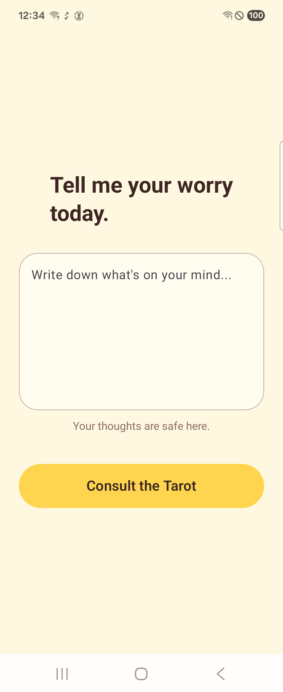
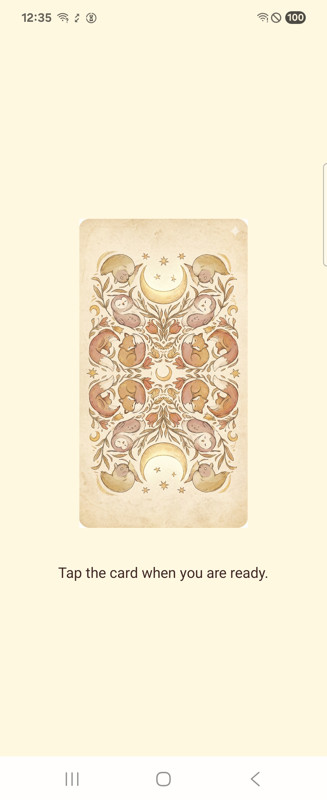
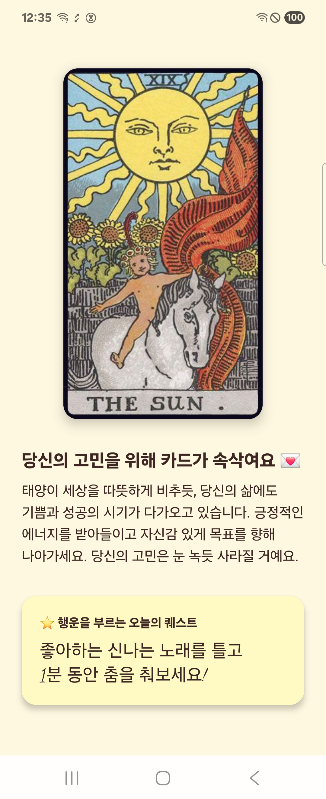
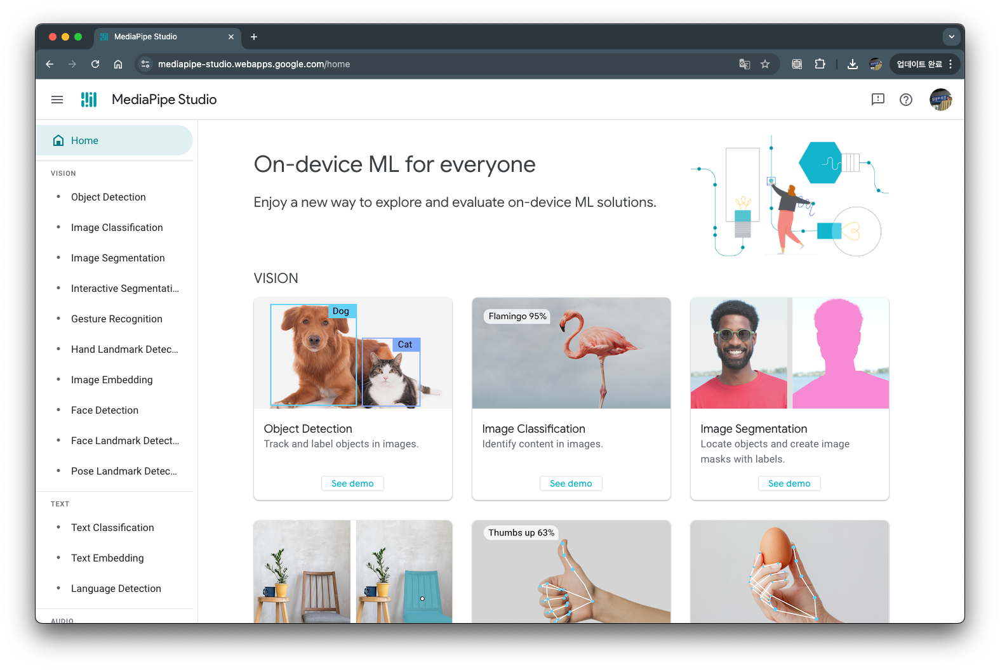

이 코드랩에서는 온디바이스(on-device) LLM 을 활용해, 사용자의 고민을 입력받고 오늘의 타로 운세를 생성해주는 Android 앱 Today Tarot 를 만들어 봅니다.
실습은 이미 준비된 시작 템플릿(main 브랜치) 을 기반으로 진행하며,
최종 결과물은 완성 템플릿(develop 브랜치) 와 거의 동일한 구조를 갖게 됩니다.
원한다면 아래처럼 직접 클론해서 사용할 수 있습니다.
# 리포지토리 클론
git clone https://github.com/Veronikapj/TodayTarot.git
cd TodayTarot
# 실습용 시작 템플릿
git checkout main
# 참고용 완성 템플릿
# git checkout develop
이 코드랩은 main 브랜치 기준으로 작성되어 있습니다.
막히면 언제든지 develop 브랜치를 열어서 비교해 보세요.
우리는 다음과 같은 앱을 함께 살펴보고 확장합니다.
초기 main 브랜치에서는 AI 부분이 지연(delay) + 고정 텍스트로 구현되어 있고,
코드랩 후반부/심화 섹션에서 이를 온디바이스 LLM(Gemini Nano / MediaPipe) 로 교체하는 방향을 살펴봅니다.
이 코드랩을 마치면 다음을 할 수 있게 됩니다.
TarotAiManager)를 설계하는 방법 이해다음 내용에 익숙하다고 가정합니다.
git clone https://github.com/Veronikapj/TodayTarot.git
cd TodayTarot
git checkout main
Android Studio에서 TodayTarot 폴더를 열고 Gradle Sync가 끝날 때까지 기다립니다.
main 브랜치 기준 주요 패키지는 다음과 같습니다.
com.example.mytarot.aiTarotAiManager – AI 호출(현재는 Mock) 담당com.example.mytarot.modelFortuneResult – 운세 결과 데이터TarotCard – 타로 카드 정보com.example.mytarot.uiInputScreen – 고민 입력 화면SelectionScreen – 카드 선택 화면ResultScreen – 운세 결과 화면TarotViewModel – 화면 상태 관리ScreenState – 화면 단계 enumpilju.android.todaytarotMainActivity – 앱 진입점pilju.android.todaytarot.ui.theme본격적인 수정에 들어가기 전에, 현재 템플릿이 잘 동작하는지 확인합니다.
InputScreen)SelectionScreen)ResultScreen, 고정 텍스트)TarotAiManager 가 1.5초 딜레이 후 고정 운세를 반환합니다.이 단계까지 문제없이 실행된다면, 개발 환경이 정상적으로 준비된 상태입니다.
 |  |  |
온디바이스 LLM은 말 그대로 기기 내에서 직접 추론(inference)을 수행하는 언어 모델입니다.
Today Tarot는 "가벼운 LLM으로도 재미있는 경험" 을 목표로 합니다.
현재 main 브랜치에서는 Mock 구현이 들어가 있으며, 심화 단계에서 이를 실제 온디바이스 모델로 교체하는 방향을 설명합니다.
Android에서 온디바이스 LLM을 사용하기 위해 다음과 같은 스택을 사용할 수 있습니다.
구체적인 API/설정은 버전과 환경에 따라 달라지므로,
이 코드랩에서는 TarotAiManager 레벨의 추상화까지만 구현하고,
실제 LLM 연결 코드는 심화 섹션에서 개념적으로 안내합니다.
MediaPipe Studio를 이용하면 Android 디바이스 없이도, 브라우저에서 바로 다양한 솔루션(예: 얼굴 스타일 변환, 객체 감지, 손 랜드마크 감지 등)을 테스트할 수 있습니다.

MediaPipe 솔루션을 사용하면 머신러닝(ML) 솔루션을 앱에 적용할 수 있습니다. 이 솔루션으로 제공되는 프레임워크를 통해 사용자에게 즉각적이고, 매력적이고, 유용한 출력을 제공하는 사전 빌드된 처리 파이프라인을 구성할 수 있습니다. MediaPipe Model Maker를 사용해서 이러한 솔루션을 맞춤설정하여 기본 모델을 업데이트할 수도 있습니다.
스튜디오에서 "모델이 어떤 톤으로 말하는지" 먼저 경험해 보면, 나중에 Tarot 프롬프트를 설계할 때 도움이 됩니다.
Google은 25년 봄에 경량·고성능 오픈 모델 계열인 Gemma 3 를 발표했습니다. Gemma 3는 "현실적인 디바이스에서도 실행될 수 있는 경량 LLM" 을 목표로 설계되었으며, 다음과 같은 특징을 갖습니다:
자세한 소개: https://developers.googleblog.com/ko/introducing-gemma3/
실제 온디바이스 LLM으로 교체하고 싶다면 다음과 같이 모델 파일을 준비할 수 있습니다:
.bin 또는 .task 파일을 얻게 됩니다:gemma2-2b-it-gpu-int8.bin
이 파일을 Android 기기 내부에 넣고 MediaPipe LLM Inference 또는 Gemini Nano/AICore API에서 사용합니다.
# 기기 연결 확인
adb devices
# 모델이 있는 디렉터리로 이동
cd ~/Downloads
# 기기 내부로 모델 파일 전송
adb push gemma2-2b-it-gpu-int8.bin /data/local/tmp/gemma2-2b-it-gpu-int8.bin
# 정상 업로드 확인
adb shell ls -lh /data/local/tmp/gemma2-2b-it-gpu-int8.bin
private const val MODEL_PATH = "/data/local/tmp/gemma2-2b-it-gpu-int8.bin"
이제 실제 main 브랜치에 포함된 코드들을 하나씩 살펴보며,
코드랩에서 참고해야 할 포인트를 정리합니다.
class TarotAiManager {
// 실제로는 여기서 Gemini Nano 등을 호출합니다.
suspend fun getFortune(worry: String): FortuneResult {
delay(1500) // AI가 고민하는 척 (1.5초 딜레이)
return FortuneResult(
cardName = "THE SUN",
cardDescription = "태양이 세상을 따뜻하게 비추듯, 당신의 삶에도 기쁨과 성공의 시기가 다가오고 있습니다. 긍정적인 에너지를 받아들이고 자신감 있게 목표를 향해 나아가세요. 당신의 고민은 눈 녹듯 사라질 거예요.",
mission = "좋아하는 신나는 노래를 틀고\n1분 동안 춤을 춰보세요!"
)
}
}
getFortune(worry: String) 이 suspend 함수로 정의되어 있으며,delay(1500) 으로 1.5초 간 대기 후,FortuneResult 를 반환합니다.나중에 실제 LLM을 붙일 때는, 이 함수 내부를 온디바이스 LLM 호출 코드로 교체하면 됩니다.
TarotAiManager의 목적TarotAiManager 내부 코드만 수정하면 전체 앱이 그대로 동작합니다.즉, TarotAiManager는 앱의 AI Adapter Layer 역할을 수행합니다.
data class FortuneResult(
val cardName: String, // 예: "THE SUN"
val cardDescription: String, // 카드 해석 (긴 글)
val mission: String // 럭키 미션
)
cardName + cardDescription + mission 3가지가 사용됩니다.package com.example.mytarot.model
data class TarotCard(
val name: String,
val description: String,
val imageUrl: String
)
TarotCard 가 적극적으로 사용되지는 않을 수 있지만,이 장에서는 ViewModel이 수행하는 책임과 흐름을 정리합니다.
INPUT → SELECTION → LOADING → RESULT
val worryText = MutableStateFlow("")
viewModelScope.launch {
_screenState.value = ScreenState.LOADING
val result = aiManager.getFortune(_worryText.value)
_fortuneResult.value = result
_screenState.value = ScreenState.RESULT
}
ViewModel은 LLM과 UI 사이의 중간 레이어로 동작하며, LLM 호출 로직은 모두 ViewModel 내부에서 처리됩니다. UI는 상태 변화만 관찰하며, AI 처리 방식에 대해 알 필요가 없습니다.
이 장에서는 Today Tarot의 화면 구성 흐름을 개념적으로 정리합니다. Compose UI는 다음과 같은 단순한 단계 구조를 가집니다.
InputScreen → SelectionScreen → ResultScreen
pickCard()가 호출되어 AI 요청이 시작됩니다.FortuneResult 데이터를 기반으로 운세 설명과 오늘의 미션을 표시합니다.이 장에서는 Today Tarot 앱이 사용하는 테마·색상·타이포그래피 구조를 요약합니다. 앱 전체의 UI 경험을 통일하는 역할을 하며, 실제 기능 로직과 분리되어 관리됩니다.
앱은 다음과 같은 컨셉 기반 컬러를 사용합니다.
이러한 색상 세트는 ui.theme 패키지에 정의되며, 각 화면에서는 이 색상만 참조함으로써 일관된 디자인을 유지합니다.
앱은 Material 3 기반 테마를 사용합니다. 라이트/다크 테마 또는 Android 12 이상에서 제공되는 Dynamic Color 여부에 따라 MaterialTheme의 colorScheme이 결정됩니다.
주요 목적은 다음과 같습니다.
기본 텍스트 스타일은 Typography에서 정의하며, 각 화면에서는 필요한 수준에서 적절한 TextStyle만 골라 사용합니다.
핵심은 디자인 요소와 기능 코드를 완전히 분리하여 앱 유지보수성을 높이는 데 있습니다.
이 장에서는 Today Tarot 앱의 실행 시작 지점(MainActivity)을 요약합니다. MainActivity는 앱의 논리 처리가 아닌 화면 전환·상태 구독에만 집중합니다.
MainActivity는 다음 상태들을 구독합니다.
screenState — 현재 화면 단계(INPUT / SELECTION / LOADING / RESULT)worryText — 사용자가 입력한 고민fortuneResult — LLM의 응답 결과이 값들은 Compose로 전달되어 화면이 갱신됩니다.
앱은 Navigation 라이브러리를 사용하지 않고, 아래와 같은 단순한 when(screenState) 기반 UI 전환 흐름을 사용합니다.
INPUT → Selection → LOADING → RESULT
목적은 다음과 같습니다.
MainActivity는 다음 두 가지 역할만 담당합니다.
그 외 로직(LLM 호출, 고민 상태 관리, 화면 단계 관리 등)은 모두 ViewModel 또는 AI Manager가 담당하여 Activity가 비대해지지 않도록 구성됩니다.
=아래는 9장을 코드랩의 핵심 챕터로 재작성한 버전입니다. 기존 문서 어투("~합니다 / ~됩니다")와 동일하게 유지했고, 요청한 대로 스텝 단위로 구성, Develop 브랜치의 카드 전체 리소스 안내, 그리고 develop의 완성 코드 흐름을 기반으로 개념·구조 중심으로 설명했습니다.
이 장은 Today Tarot 코드랩의 핵심 단계로, Mock AI를 사용하던 구조를 GenAI LLM + Gemma 모델로 실제 운세를 생성하는 방식으로 확장하는 전체 흐름을 설명합니다. Develop 브랜치의 TarotAiManager를 기반으로, 구조·핵심 로직·프롬프트 구성 방식을 단계별로 이해합니다.
오늘의 타로 운세는 다음 단계로 생성됩니다.
1) 모델 파일 준비 및 AI 엔진 초기화
2) 카드 덱에서 1장 선택
3) 선택한 카드 이름 가공
4) 프롬프트 생성 (LLM 입력)
5) MediaPipe LlmInference로 추론 실행
6) 응답 후처리 및 FortuneResult 변환
7) UI에 결과 전달
이 흐름은 TarotAiManager 내부에서 모두 처리되며, UI(ViewModel)에서는 단순히 getFortune(worry) 를 호출하여 결과를 받습니다.
Develop 브랜치에서는 MediaPipe LLM Inference 기반의 Gemma 모델을 사용합니다. 모델 파일은 Android 기기 내부 저장소(/data/local/tmp/)에 배치합니다.
예:
gemma2-2b-it-gpu-int8.bin
adb 로 옮기는 방법
adb push gemma2-2b-it-gpu-int8.bin /data/local/tmp/
adb shell chmod 644 /data/local/tmp/gemma2-2b-it-gpu-int8.bin
adb shell ls -lh /data/local/tmp/
TarotAiManager의 초기화 단계에서는 아래와 같이 모델을 읽습니다.
val options = LlmInference.LlmInferenceOptions.builder()
.setModelPath(modelPath)
.setMaxTokens(512)
.build()
llmInference = LlmInference.createFromOptions(context, options)
모델이 없을 경우 앱이 크래시되지 않도록 데모 응답을 반환하는 안전 장치도 포함됩니다.
Develop 브랜치에서는 78장의 전체 메이저·마이너 아르카나 카드가 모두 포함되어 있습니다.
카드 파일 이름 목록 예:
the_fool, the_magician, ..., king_of_pentacles
모든 카드 이미지는 develop 브랜치의 drawable 폴더에 포함되어 있습니다.
참고:https://github.com/Veronikapj/TodayTarot/tree/develop/app/src/main/res/drawable
UI에서는 cardName 키를 기반으로 해당 이미지를 표시할 수 있습니다.
예: ace_of_cups → "Ace of cups"
개념 코드:
val readableCardName = selectedCardKey.replace("_", " ")
.replaceFirstChar { it.titlecase(Locale.getDefault()) }
이 처리는 프롬프트 이해도 개선에 도움이 됩니다.
Develop 브랜치에서는 MediaPipe LLM Inference가 잘 이해하도록 역할(Role), 예시(Example), 입력(Input)을 포함한 프롬프트 템플릿을 사용합니다.
핵심 구조:
<start_of_turn>user
Role: Tarot Reader.
Task: Create a NEW Korean response...
Input Worry: "{worry}"
Input Card: "{card}"
--- Example Start ---
...
--- Example End ---
Output:
<end_of_turn>
<start_of_turn>model
LLM은 Output: 이후의 텍스트를 생성합니다.
MediaPipe LlmInference의 generateResponse(prompt) 를 사용하여 온디바이스 Gemma 모델에서 실제 운세를 생성합니다.
개념 코드:
val response = llmInference?.generateResponse(prompt) ?: ""
추론은 반드시 Dispatchers.IO 스레드에서 실행됩니다.
추론 결과에는 불필요한 전후 텍스트가 포함될 수 있으므로 정리 과정을 거친 후 아래 모델로 매핑됩니다.
data class FortuneResult(
val cardName: String,
val cardDescription: String,
val mission: String
)
사용자가 보기 좋은 형태의 운세 설명을 cardDescription 으로 넣고, 미션은 AI가 누락할 수 있으므로 fallback 미션 목록을 사용해 항상 채워줍니다.
예:
mission = fallbackMissions.random()
모든 처리가 완료되면 최종 FortuneResult가 ViewModel로 반환되고, ResultScreen에서 카드 이미지 + 설명 + 미션을 렌더링하게 됩니다.
UI는 LLM 엔진을 알지 못하며, 상태 변화만 구독하여 화면이 갱신됩니다.
사용자 고민 입력
↓
TarotAiManager.getFortune(worry)
↓
모델 로딩 → 카드 선택 → 프롬프트 생성 → LLM 추론
↓
응답 후처리 → FortuneResult 매핑
↓
ViewModel 상태 업데이트
↓
ResultScreen 렌더링
이 구조는 MediaPipe / Gemma 기반 LLM뿐 아니라 Gemini Nano(AICore)나 TFLite LLM으로도 동일한 방식으로 확장할 수 있습니다.
이 코드랩에서는 Today Tarot 앱을 기반으로, 온디바이스 LLM을 활용한 간단한 생성형 AI 기능이 어떻게 구현되는지 전체 흐름을 실습했습니다.
다음과 같은 주요 단계를 완료했습니다.
이제 Today Tarot는 단순한 데모가 아닌, 실제로 디바이스에서 LLM이 돌아가는 온디바이스 AI 앱의 기본 형태를 갖추게 됩니다.
오늘 구현한 구조는 확장성을 염두에 두고 설계되어 있습니다. 아래는 앞으로 쉽게 시도할 수 있는 발전 방향입니다.
카드 키(ace_of_cups)로 drawable 리소스를 바로 로드하는 방식으로 확장할 수 있습니다. 카드 설명 텍스트나 키워드를 JSON/DB로 추가하면 더 풍부한 해석이 가능합니다.
Android 15 이상에서는 Gemini Nano를 직접 사용할 수 있습니다. MediaPipe → Nano로 엔진만 교체하면 전체 앱 구조는 그대로 유지됩니다.
현재는 /data/local/tmp에 직접 업로드했지만, 실제 배포 환경에서는 assets → 내부 저장소 복사 방식으로 자동 로딩하도록 개선할 수 있습니다.
현재는 1장 선택 방식이지만,
사용자 고민을 LLM으로 전처리하여 "카테고리 분류 → 카드 매칭 → 설명 생성" 과정을 자동화할 수 있습니다.
이제 여러분은 MediaPipe GenAI 기반 온디바이스 LLM을 실제 Android 앱에 통합하는 전체 흐름을 직접 구현했습니다. 이 구조를 활용하면, Tarot 앱뿐 아니라 챗봇·요약·추천·확장형 생성 앱 등 다양한 온디바이스 AI 활용 프로젝트를 손쉽게 확장할 수 있습니다.
축하합니다 🎉
이제 Today Tarot 코드베이스를 코드랩 관점에서 한 바퀴 다 훑었고,
어디에 온디바이스 AI를 꽂아 넣을 수 있을지 구조를 이해하게 되었습니다.